Changes in PRIMAP-hist v2.6.1_final compared to v2.6_final for Algeria
2025-03-19
Johannes Gütschow
Change analysis for Algeria for PRIMAP-hist v2.6.1_final compared to v2.6_final
Overview over emissions by sector and gas
The following figures show the aggregate national total emissions excluding LULUCF AR6GWP100 for the country reported priority scenario. The dotted linesshow the v2.6_final data.
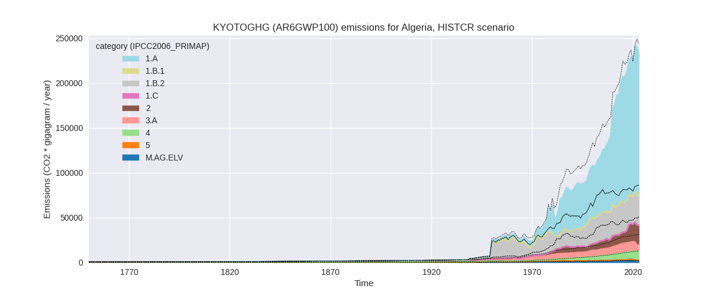
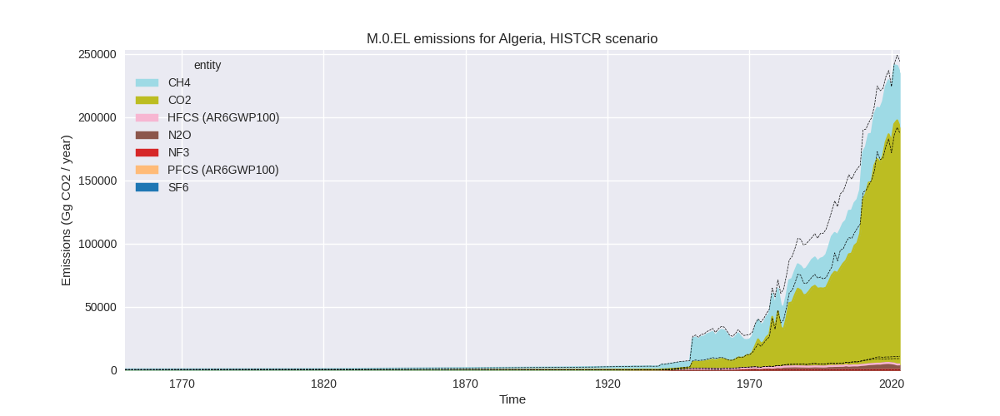
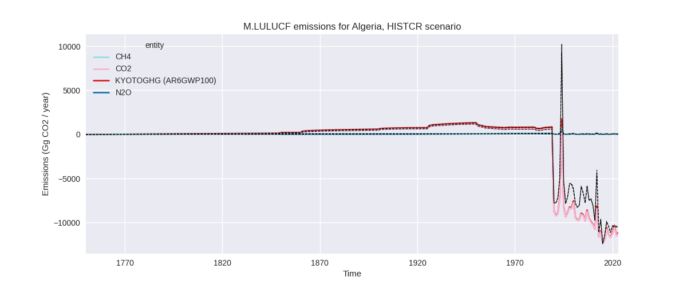
The following figures show the aggregate national total emissions excluding LULUCF AR6GWP100 for the third party priority scenario. The dotted linesshow the v2.6_final data.
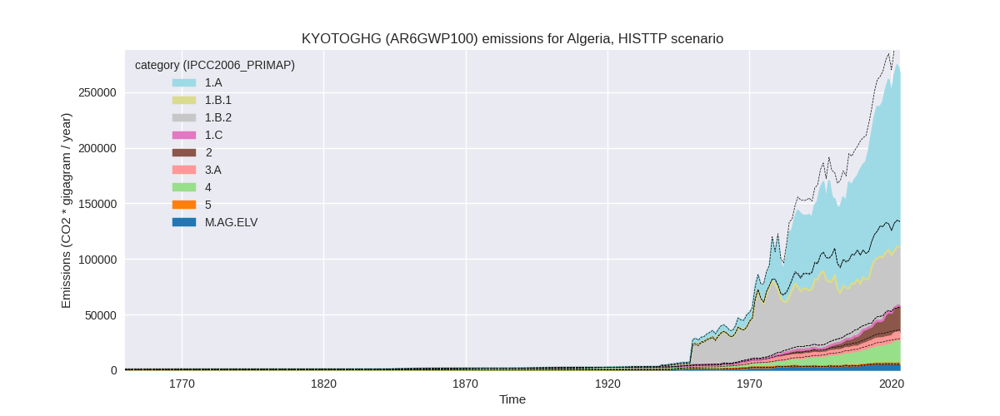
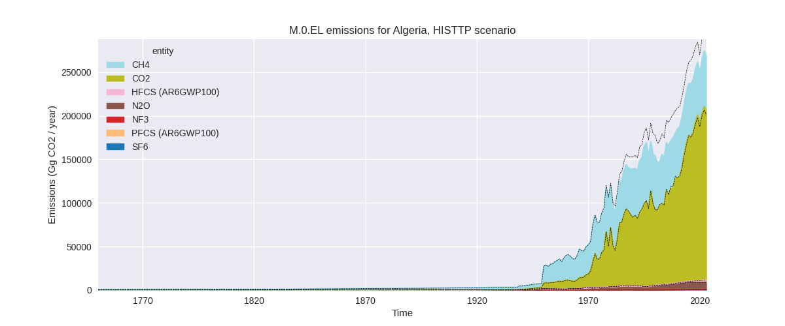
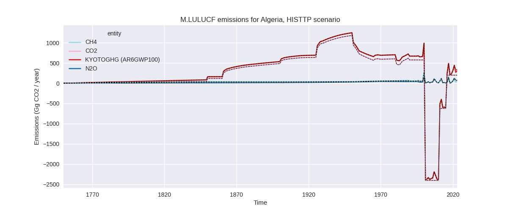
Overview over changes
In the country reported priority scenario we have the following changes for aggregate Kyoto GHG and national total emissions excluding LULUCF (M.0.EL):
- Emissions in 2023 have changed by -3.8%% (-9254.05 Gg CO2 / year)
- Emissions in 1990-2023 have changed by -10.3%% (-17174.37 Gg CO2 / year)
In the third party priority scenario we have the following changes for aggregate Kyoto GHG and national total emissions excluding LULUCF (M.0.EL):
- Emissions in 2023 have changed by -7.9%% (-22892.57 Gg CO2 / year)
- Emissions in 1990-2023 have changed by -10.7%% (-22544.59 Gg CO2 / year)
Most important changes per scenario and time frame
In the country reported priority scenario the following sector-gas combinations have the highest absolute impact on national total KyotoGHG (AR6GWP100) emissions in 2023 (top 5):
- 1: 3.A, CH4 with -7080.89 Gg CO2 / year (-50.2%)
- 2: 1.B.2, CH4 with -6567.98 Gg CO2 / year (-20.1%)
- 3: 2, CO2 with 5250.14 Gg CO2 / year (31.9%)
- 4: 3.A, N2O with -4101.69 Gg CO2 / year (-93.0%)
- 5: 1.B.2, CO2 with 3846.19 Gg CO2 / year (145.1%)
In the country reported priority scenario the following sector-gas combinations have the highest absolute impact on national total KyotoGHG (AR6GWP100) emissions in 1990-2023 (top 5):
- 1: 1.B.2, CH4 with -8450.38 Gg CO2 / year (-29.4%)
- 2: 1.B.2, CO2 with 5029.88 Gg CO2 / year (141.5%)
- 3: 2, CO2 with -4448.95 Gg CO2 / year (-29.4%)
- 4: 3.A, CH4 with -3103.28 Gg CO2 / year (-28.9%)
- 5: 3.A, N2O with -3101.05 Gg CO2 / year (-90.7%)
In the third party priority scenario the following sector-gas combinations have the highest absolute impact on national total KyotoGHG (AR6GWP100) emissions in 2023 (top 5):
- 1: 1.B.2, CH4 with -24021.59 Gg CO2 / year (-40.1%)
- 2: 2, CO2 with 3380.81 Gg CO2 / year (20.9%)
- 3: 4, CH4 with -2377.45 Gg CO2 / year (-11.0%)
- 4: M.AG.ELV, N2O with 151.20 Gg CO2 / year (3.1%)
- 5: 5, N2O with -54.02 Gg CO2 / year (-6.4%)
In the third party priority scenario the following sector-gas combinations have the highest absolute impact on national total KyotoGHG (AR6GWP100) emissions in 1990-2023 (top 5):
- 1: 1.B.2, CH4 with -19167.48 Gg CO2 / year (-32.1%)
- 2: 4, CH4 with -3213.27 Gg CO2 / year (-22.5%)
- 3: 2, CO2 with -146.06 Gg CO2 / year (-1.6%)
- 4: 5, N2O with -33.30 Gg CO2 / year (-6.9%)
- 5: M.AG.ELV, N2O with 8.89 Gg CO2 / year (0.2%)
Notes on data changes
Here we list notes explaining important emissions changes for the country.
- CRT data from BTR1, which covers 1990-2022 replaces and extends BUR1 data.
- In the CR time-series we have several high changes.
- Livestock emissions are down by 50% (CH4) to 90% (N2O) in 2023 and 29-90% for cumulative emissions. The NIR states that “The drop in 2022 is due to revision of national agricultural statistics”
- Fugitive emissions from oil and gas have been revised downwards for CH4 and upwards for CO2.
- CO2 emissions from several industrial sectors have been revised.
- In the TP scenario the changes are due to updated EDGAR data with high changes in sectors 1.B.2 and 4.
Changes by sector and gas
For each scenario and time frame the changes are displayed for all individual sectors and all individual gases. In the sector plot we use aggregate Kyoto GHGs in AR6GWP100. In the gas plot we usenational total emissions without LULUCF.
country reported scenario
2023
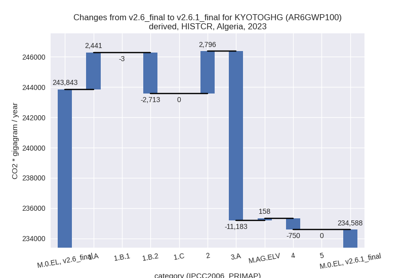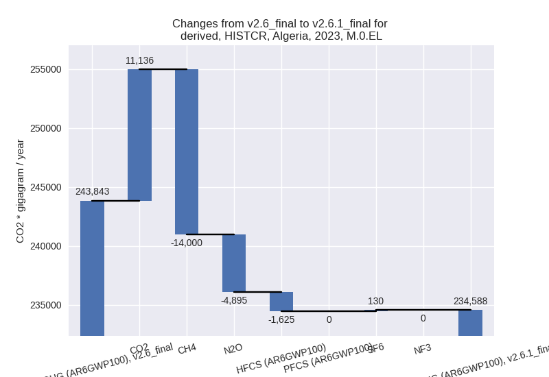
1990-2023
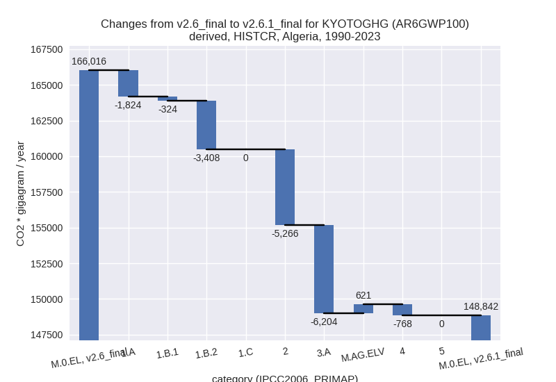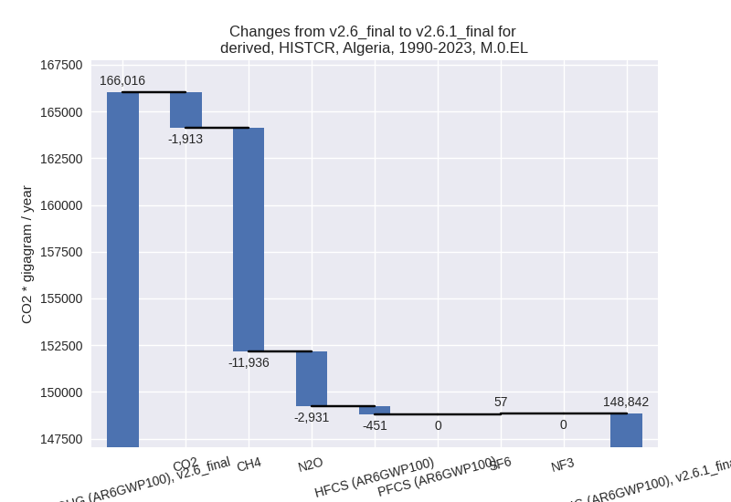
third party scenario
2023
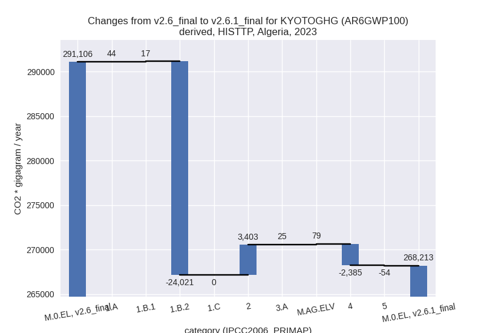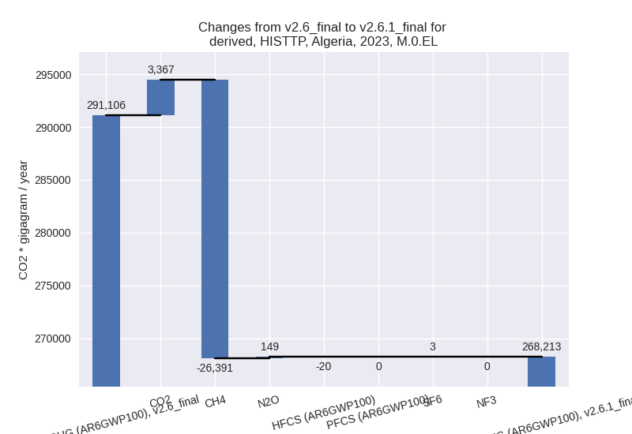
1990-2023
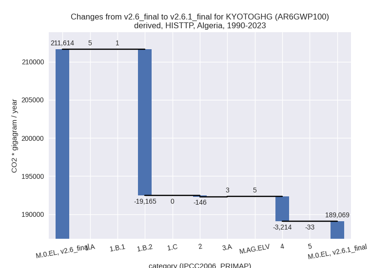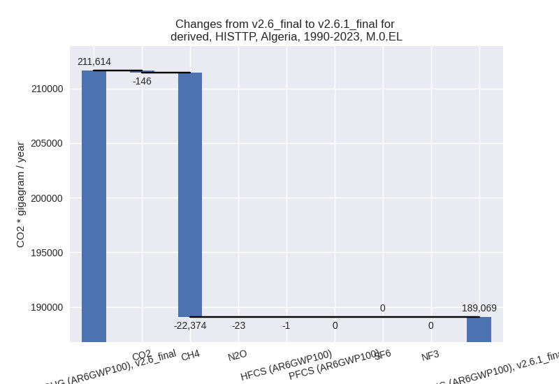
Detailed changes for the scenarios:
country reported scenario (HISTCR):
Most important changes per time frame
For 2023 the following sector-gas combinations have the highest absolute impact on national total KyotoGHG (AR6GWP100) emissions in 2023 (top 5):
- 1: 3.A, CH4 with -7080.89 Gg CO2 / year (-50.2%)
- 2: 1.B.2, CH4 with -6567.98 Gg CO2 / year (-20.1%)
- 3: 2, CO2 with 5250.14 Gg CO2 / year (31.9%)
- 4: 3.A, N2O with -4101.69 Gg CO2 / year (-93.0%)
- 5: 1.B.2, CO2 with 3846.19 Gg CO2 / year (145.1%)
For 1990-2023 the following sector-gas combinations have the highest absolute impact on national total KyotoGHG (AR6GWP100) emissions in 1990-2023 (top 5):
- 1: 1.B.2, CH4 with -8450.38 Gg CO2 / year (-29.4%)
- 2: 1.B.2, CO2 with 5029.88 Gg CO2 / year (141.5%)
- 3: 2, CO2 with -4448.95 Gg CO2 / year (-29.4%)
- 4: 3.A, CH4 with -3103.28 Gg CO2 / year (-28.9%)
- 5: 3.A, N2O with -3101.05 Gg CO2 / year (-90.7%)
Changes in the main sectors for aggregate KyotoGHG (AR6GWP100) are
- 1: Total sectoral emissions in 2022 are 198616.14
Gg CO2 / year which is 82.7% of M.0.EL emissions. 2023 Emissions have
changed by -0.1% (-274.72 Gg CO2 /
year). 1990-2023 Emissions have changed by -4.4% (-5556.28 Gg CO2 / year). For
1990-2023 the changes per gas
are:
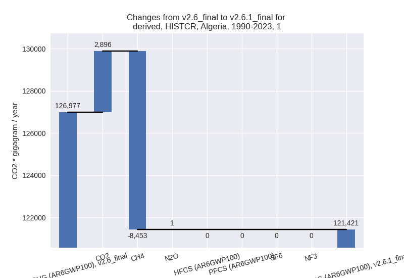
The changes come from the following subsectors:- 1.A: Total sectoral emissions in 2022 are 165434.91 Gg CO2 / year which is 83.3% of category 1 emissions. 2023 Emissions have changed by 1.5% (2440.94 Gg CO2 / year). 1990-2023 Emissions have changed by -1.9% (-1824.28 Gg CO2 / year).
- 1.B.1: Total sectoral emissions in 2022 are 0.00 Gg
CO2 / year which is 0.0% of category 1 emissions. 2023 Emissions have
changed by -100.0% (-3.04 Gg CO2 /
year). 1990-2023 Emissions have changed by -99.9% (-324.45 Gg CO2 / year). For 2023
the changes per gas
are:
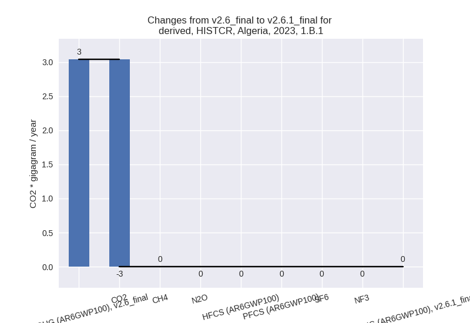
For 1990-2023 the changes per gas are:
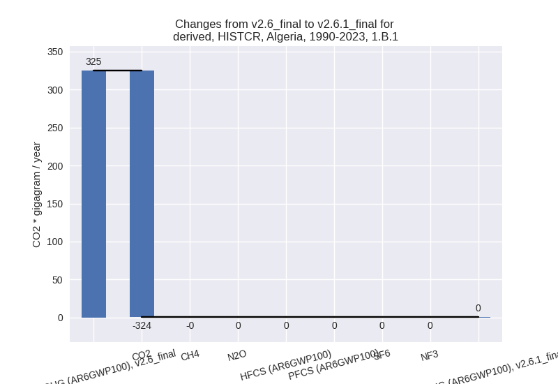
There is no subsector information available in PRIMAP-hist. - 1.B.2: Total sectoral emissions in 2022 are
33181.23 Gg CO2 / year which is 16.7% of category 1 emissions. 2023
Emissions have changed by -7.7%
(-2712.62 Gg CO2 / year). 1990-2023 Emissions have changed by -10.5% (-3407.56 Gg CO2 / year). For 2023
the changes per gas
are:
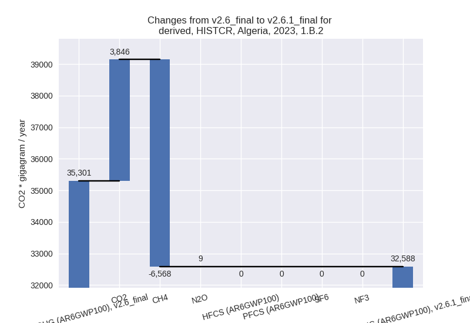
For 1990-2023 the changes per gas are:
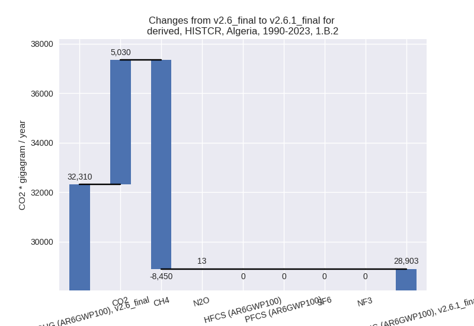
There is no subsector information available in PRIMAP-hist.
- 2: Total sectoral emissions in 2022 are 22128.19 Gg
CO2 / year which is 9.2% of M.0.EL emissions. 2023 Emissions have
changed by 14.4% (2795.63 Gg CO2 /
year). 1990-2023 Emissions have changed by -32.2% (-5266.48 Gg CO2 / year). For 2023
the changes per gas
are:
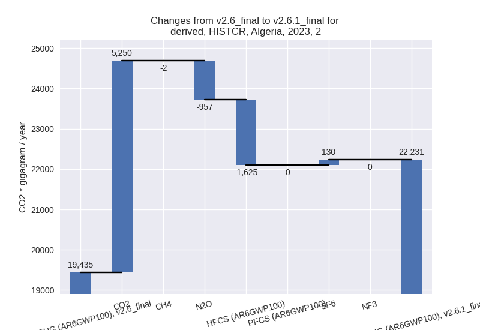
For 1990-2023 the changes per gas are:
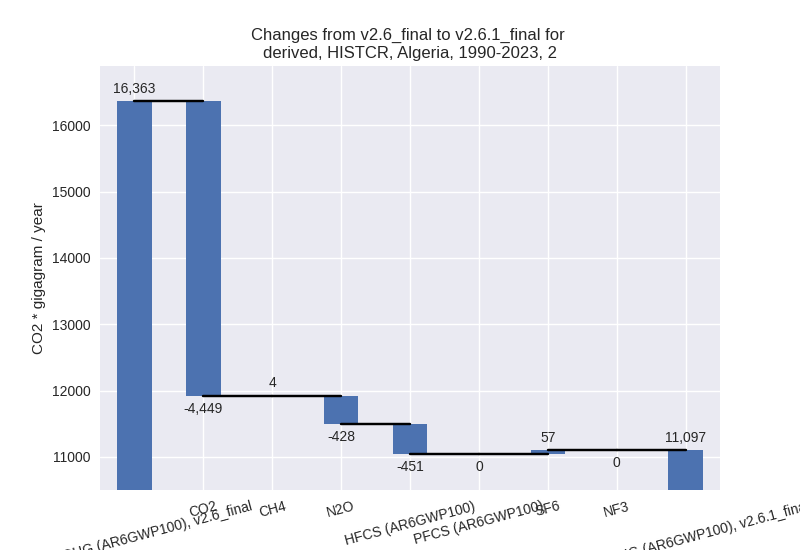 - M.AG: Total sectoral emissions in 2022 are 9657.05
Gg CO2 / year which is 4.0% of M.0.EL emissions. 2023 Emissions have
changed by -53.1% (-11024.53 Gg CO2
/ year). 1990-2023 Emissions have changed by -35.0% (-5583.59 Gg CO2 / year). For 2023
the changes per gas
are:
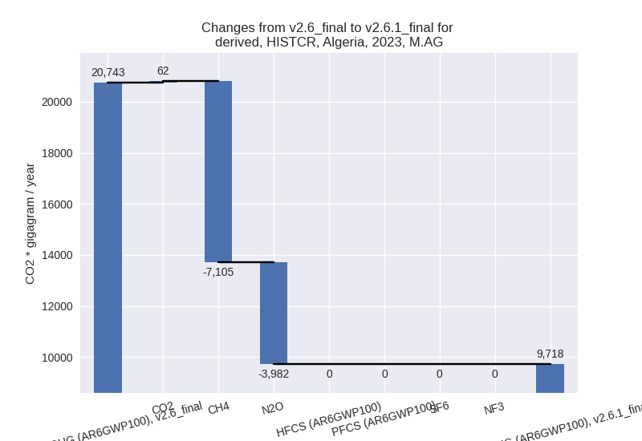
For 1990-2023 the changes per gas are:
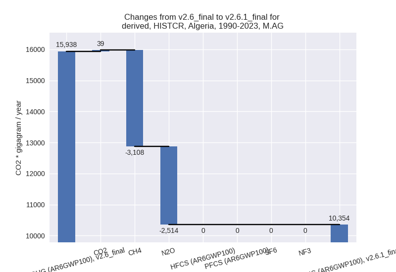
The changes come from the following subsectors:- 3.A: Total sectoral emissions in 2022 are 7247.47
Gg CO2 / year which is 75.0% of category M.AG emissions. 2023 Emissions
have changed by -60.4% (-11182.57 Gg
CO2 / year). 1990-2023 Emissions have changed by -43.8% (-6204.32 Gg CO2 / year). For 2023
the changes per gas
are:
For 1990-2023 the changes per gas are:
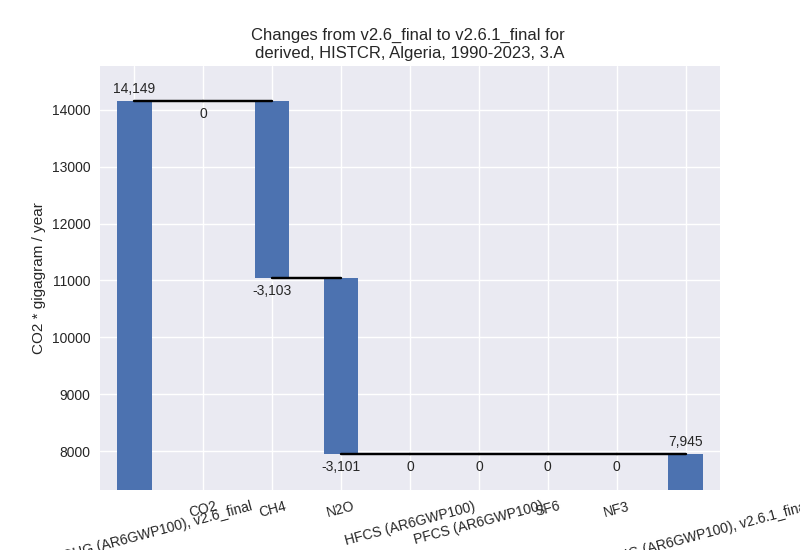
There is no subsector information available in PRIMAP-hist. - M.AG.ELV: Total sectoral emissions in 2022 are
2409.58 Gg CO2 / year which is 25.0% of category M.AG emissions. 2023
Emissions have changed by 7.1%
(158.04 Gg CO2 / year). 1990-2023 Emissions have changed by 34.7% (620.73 Gg CO2 / year). For 2023 the
changes per gas
are:
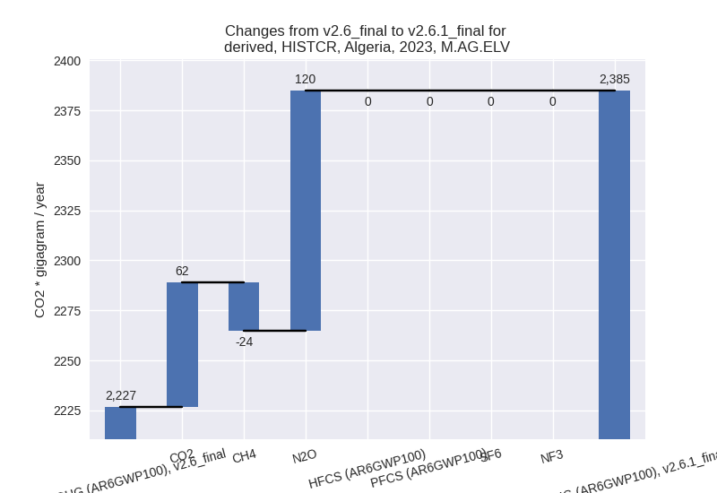
For 1990-2023 the changes per gas are:
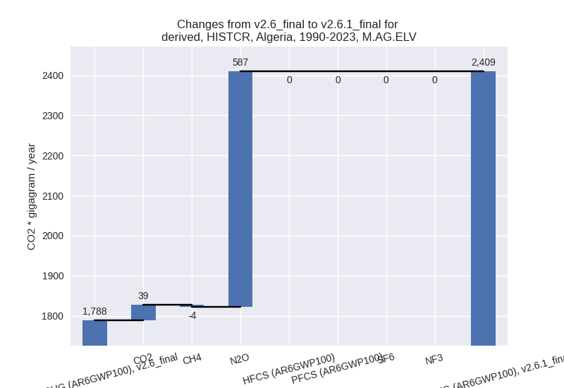
There is no subsector information available in PRIMAP-hist.
- 3.A: Total sectoral emissions in 2022 are 7247.47
Gg CO2 / year which is 75.0% of category M.AG emissions. 2023 Emissions
have changed by -60.4% (-11182.57 Gg
CO2 / year). 1990-2023 Emissions have changed by -43.8% (-6204.32 Gg CO2 / year). For 2023
the changes per gas
are:
- 4: Total sectoral emissions in 2022 are 9873.02 Gg
CO2 / year which is 4.1% of M.0.EL emissions. 2023 Emissions have
changed by -7.0% (-750.44 Gg CO2 /
year). 1990-2023 Emissions have changed by -11.4% (-768.01 Gg CO2 / year). For 2023
the changes per gas
are:
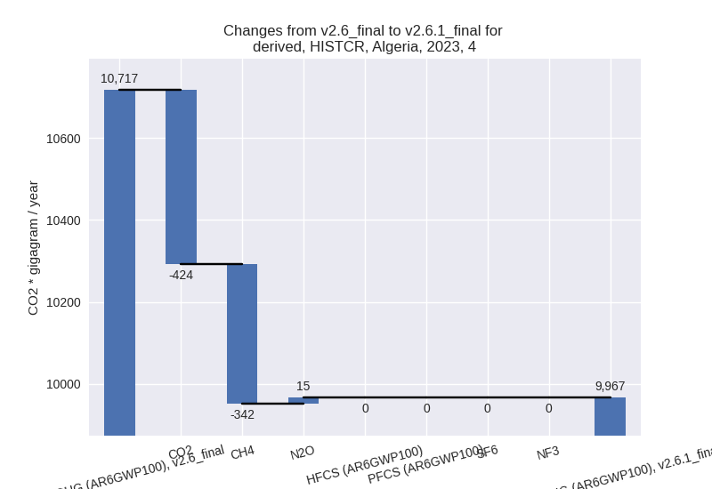
For 1990-2023 the changes per gas are:
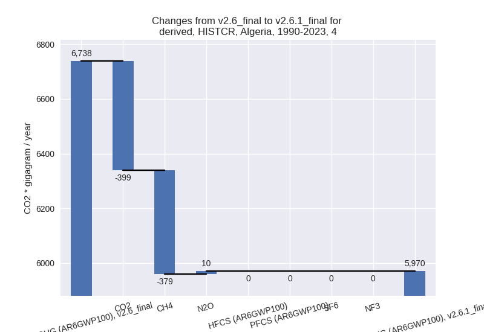 - 5: No data
third party scenario (HISTTP):
Most important changes per time frame
For 2023 the following sector-gas combinations have the highest absolute impact on national total KyotoGHG (AR6GWP100) emissions in 2023 (top 5):
- 1: 1.B.2, CH4 with -24021.59 Gg CO2 / year (-40.1%)
- 2: 2, CO2 with 3380.81 Gg CO2 / year (20.9%)
- 3: 4, CH4 with -2377.45 Gg CO2 / year (-11.0%)
- 4: M.AG.ELV, N2O with 151.20 Gg CO2 / year (3.1%)
- 5: 5, N2O with -54.02 Gg CO2 / year (-6.4%)
For 1990-2023 the following sector-gas combinations have the highest absolute impact on national total KyotoGHG (AR6GWP100) emissions in 1990-2023 (top 5):
- 1: 1.B.2, CH4 with -19167.48 Gg CO2 / year (-32.1%)
- 2: 4, CH4 with -3213.27 Gg CO2 / year (-22.5%)
- 3: 2, CO2 with -146.06 Gg CO2 / year (-1.6%)
- 4: 5, N2O with -33.30 Gg CO2 / year (-6.9%)
- 5: M.AG.ELV, N2O with 8.89 Gg CO2 / year (0.2%)
Changes in the main sectors for aggregate KyotoGHG (AR6GWP100) are
- 1: Total sectoral emissions in 2022 are 216525.26
Gg CO2 / year which is 79.0% of M.0.EL emissions. 2023 Emissions have
changed by -10.2% (-23959.87 Gg CO2
/ year). 1990-2023 Emissions have changed by -10.9% (-19159.40 Gg CO2 / year). For 2023
the changes per gas
are:
For 1990-2023 the changes per gas are:
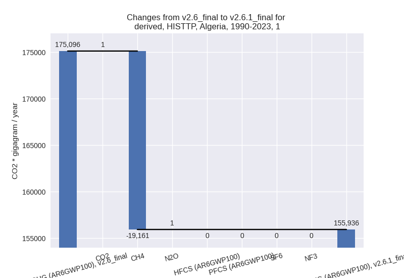
The changes come from the following subsectors:- 1.A: Total sectoral emissions in 2022 are 162818.42 Gg CO2 / year which is 75.2% of category 1 emissions. 2023 Emissions have changed by 0.0% (44.27 Gg CO2 / year). 1990-2023 Emissions have changed by 0.0% (4.61 Gg CO2 / year).
- 1.B.1: Total sectoral emissions in 2022 are 23.07
Gg CO2 / year which is 0.0% of category 1 emissions. 2023 Emissions have
changed by 538.5% (16.90 Gg CO2 /
year). 1990-2023 Emissions have changed by 0.4% (1.27 Gg CO2 / year). For 2023 the
changes per gas
are:
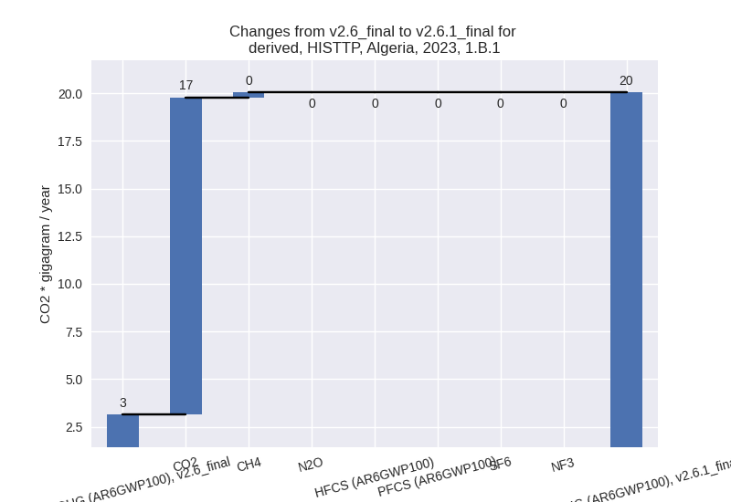
There is no subsector information available in PRIMAP-hist. - 1.B.2: Total sectoral emissions in 2022 are
53683.77 Gg CO2 / year which is 24.8% of category 1 emissions. 2023
Emissions have changed by -31.3%
(-24021.04 Gg CO2 / year). 1990-2023 Emissions have changed by -26.4% (-19165.28 Gg CO2 / year). For 2023
the changes per gas
are:
For 1990-2023 the changes per gas are:
There is no subsector information available in PRIMAP-hist.
- 2: Total sectoral emissions in 2022 are 23755.54 Gg
CO2 / year which is 8.7% of M.0.EL emissions. 2023 Emissions have
changed by 16.6% (3403.03 Gg CO2 /
year). 1990-2023 Emissions have changed by -1.3% (-146.17 Gg CO2 / year). For 2023
the changes per gas
are:
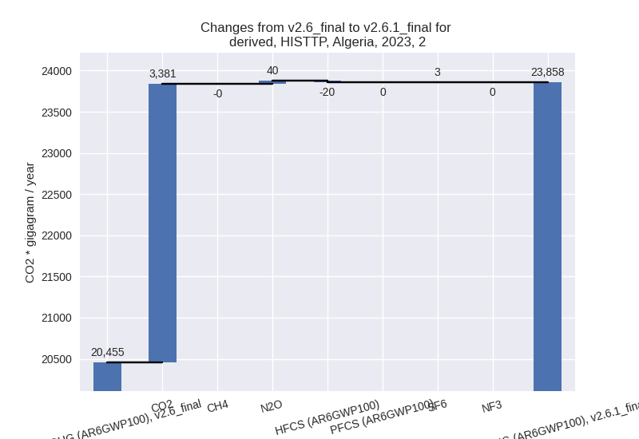 - M.AG: Total sectoral emissions in 2022 are 13248.83 Gg CO2 / year which is 4.8% of M.0.EL emissions. 2023 Emissions have changed by 0.8% (103.71 Gg CO2 / year). 1990-2023 Emissions have changed by 0.1% (8.11 Gg CO2 / year).
- 4: Total sectoral emissions in 2022 are 19877.36 Gg
CO2 / year which is 7.2% of M.0.EL emissions. 2023 Emissions have
changed by -10.6% (-2385.41 Gg CO2 /
year). 1990-2023 Emissions have changed by -21.7% (-3213.84 Gg CO2 / year). For 2023
the changes per gas
are:
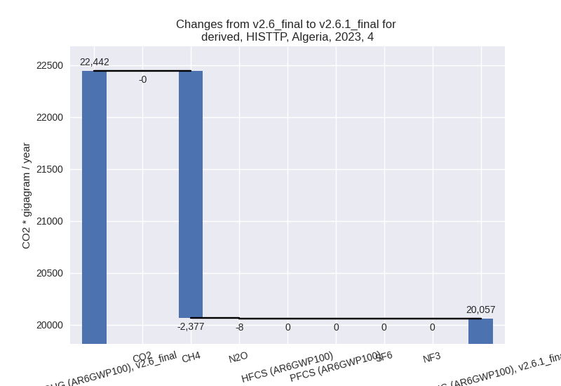
For 1990-2023 the changes per gas are: - 5: Total sectoral emissions in 2022 are 776.22 Gg
CO2 / year which is 0.3% of M.0.EL emissions. 2023 Emissions have
changed by -6.4% (-54.02 Gg CO2 /
year). 1990-2023 Emissions have changed by -6.9% (-33.30 Gg CO2 / year). For 2023 the
changes per gas
are:

For 1990-2023 the changes per gas are:
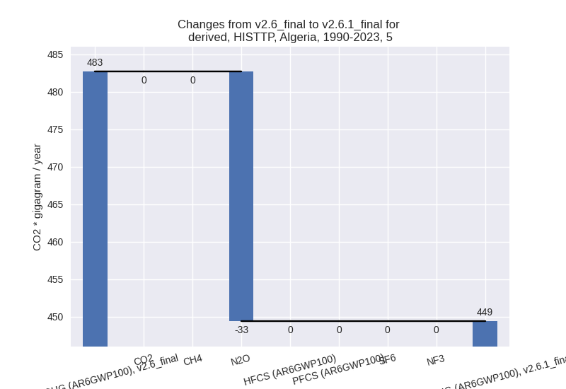